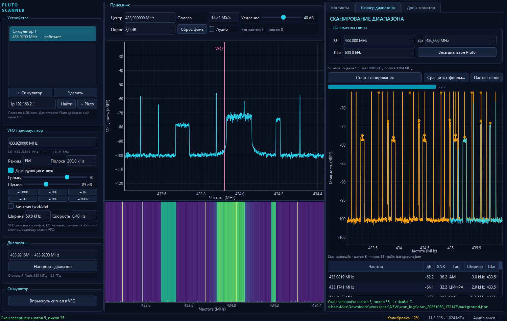
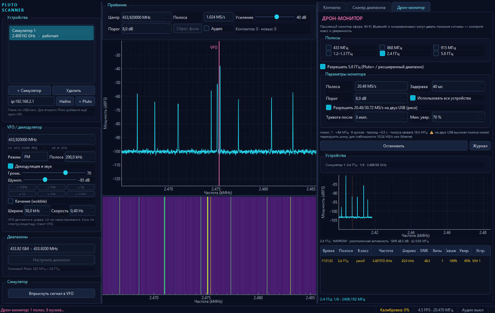

Pluto — это приёмник, не радар и не декодер протоколов.
Он может показать радиосигнал, но не может сам по себе назвать модель дрона, направление и дальность.
Поэтому приложение показывает измерения и гипотезы, а не «магический вердикт».
Обзор, прослушивание, поиск новых сигналов и мониторинг полос.
Параллельные полосы, разные антенны и резерв — при достаточной USB/сетевой полосе.
LO не перестраивается при движении VFO и качании. Это позволяет слушать сигнал и не рвать захват.
Найти статические и новые сигналы во всём паспортном диапазоне, сохранить «снимок эфира» и сравнить с ним будущие сканы.

scan_logs/
scan_20261030_172147/
step_00000.json
step_00001.json
...
background.json
compare.json
Спектр шага, пики, SNR, тип, ширина, шумовая дорожка, max-hold/mean/coverage всего скана.
Подъёмы max-hold ловят широкополосные изменения, которые не дали узкого пика.
Фон — это не просто файл, а контекст: с какого устройства, с каким усилением и в каком диапазоне он снят.
Не «сканировать всё медленно», а часто возвращаться в интересные полосы и измерять временную структуру сигнала.

| Класс | Признаки | Тревога |
|---|---|---|
| FHSS | короткие узкие посылки, скважность, прыжки | да |
| TELEMETRY | редкие узкие посылки | да |
| VIDEO_ANALOG | непрерывный канал 3–10 МГц | да |
| VIDEO_DIGITAL | широкий канал 8–30 МГц | да |
| WIFI | 15–30 МГц, «плоский» спектр | нет |
| NARROW | узкий непрерывный носитель | нет |
| UNKNOWN | прочая активность | нет |
Кандидат — оранжевый. Тревога — красный, только после 3 попаданий и 70% уверенности. В таблице есть столбец «Хиты».
2.4 ГГц полон Wi-Fi, Bluetooth, Zigbee и камер. Большинство одиночных тревог — ложные. Для проверки нужен известный передатчик.
| Режим | Результат |
|---|---|
| 1 Pluto, 20.48 MS/s | стабильно |
| 2 Pluto, 10.24 MS/s | стабильно |
| 2 Pluto, 20.48 MS/s | 10 с — ок, 30 с — одно падает |
| 2 Pluto, Ethernet | цель: честные 2 × 20.48 |
Два USB-потока делят одну шину/питание. На 20.48 каждому её не хватает. На 10.24 суммарно примерно как один 20.48, но полосы можно смотреть параллельно.
Галочка «Разрешить 20.48/30.72 на двух USB» сохраняет выбранную скорость, но предупреждает. Для стабильности — 10.24 или Ethernet.
IQ (Pluto / симулятор)
-> DeviceSession
-> SpectrumAnalyzer
-> detector -> tracker -> contacts
-> VFO -> demod -> audio
-> iq_ready (дрон-монитор)
Сканер:
ScanController -> peaks
-> recorder -> compare
Дрон-монитор:
DroneWatchController -> features
DroneMonitorManager -> события/тревоги
devices/ · dsp/ · scanner/ · drone/ · ui/
Pluto+ Rev.C. 5.8 ГГц: LO ставится, IQ читается. 2 × 10.24 MS/s — стабильно. 2 × 20.48 MS/s — короткий тест, дальше риск.
Реальный дрон/пульт как ground truth. Пока детектор проверен на эфире, шуме и симуляторе, а не на подтверждённой цели.
Pluto Scanner закрывает путь: увидеть → измерить → сохранить → сравнить. Отдельный быстрый режим смотрит дроновые полосы и честно показывает кандидатов, а не выдаёт желаемое за действительное.
Реальный Pluto+, три вкладки, JSON-логи, 69 тестов, запуск ярлыком, стабильные 10.24 MS/s на двух USB.
Ethernet, тестовый передатчик, Remote ID, пеленг и ML — по мере появления железа и размеченных данных.